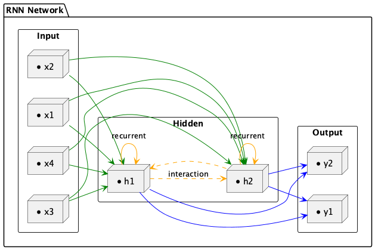

時間序列的預言者：如何通過 RNN、LSTM 和 GRU 預測未來
Table of Contents
1. CNN的限制
在卷積神經網路中，我們提過CNN的想法源自於對人類大腦認知方式的模仿，當我們辨識一個圖像，會先注意到顏色鮮明的點、線、面，之後將它們構成一個個不同的形狀(眼睛、鼻子、嘴巴 …)，這種抽象化的過程就是 CNN 演算法建立模型的方式。其過程如圖11。

Figure 1: CNN 概念
至於圖片中的每一個特徵則是利用卷積核來取得(如圖2)，換言之，CNN其實是在模擬人類的眼睛。

Figure 2: CNN原理
萬一我們所要處理的資料並不是一張張的圖、而是一系列連續性、有時間順序的資料呢？例如：
- 一篇文章: 也許我們想生成這篇文章的摘要
- 一段時間內蒐集一的某地PM 2.5數值: 也許我們想預測該地下週的PM 2.5
- 一段演講錄音: 也許我們想生成逐字稿
你會發現，這類資料其實不太適合用眼睛，可能更適合用耳朵，所以拿CNN來分析這類資料大概是用錯了工具(相信經過理財達人競賽的你應該深有同感)。
那麼，哪一種模型比較適合模擬出人類的耳朵功能？這是本節的討論重點。
2. 遞迴神經網路(Recurrent Neural Networks, RNNs)
遞迴神經網絡（RNN）是一種專門設計來處理序列資料的人工神經網絡。序列資料指的是那些隨時間連續出現的資料，比如語言（單詞組成的句子）、影片（一連串的影像畫面），或者是音樂（一連串的音符）。
想像你利用每天晚上睡前花30分鐘追劇，每當新的一集開始時，你通常還會記得上一集發生了什麼。RNN也是這樣工作的：它在處理資料（例如一句話中的每個單詞）時，會記得之前的資訊，並利用這些資訊來幫助理解或預測下一步會發生什麼。
那RNN是如何做到這點的呢?這種“記憶”是通過網絡中的循環連接實現的。這些連接使得訊息可以在模型的一層之間前後流動，就像你在看連續劇時保持對劇情的記憶一樣。我們先來看圖3，右邊是我們熟悉的神經網路(例如CNN、DNN)，資料一律由模型的左側layer往右側傳送；而左邊的RNN則有點不同，每一層的神經元在將資料往右傳遞的同時，還偷偷留了一份給 自己 ，這裡說的自己不是真正的自己，而是 下一個回合的自己 。
/2024-05-10_08-43-10_RNN-03.png)
Figure 3: CNN v.s. RNN
聽起來好像有點抽象，沒關係，我們現在把圖3中左側RNN的某一個神經元單獨抽出來分解它的內部動作，我們把圖3中的那個循環的箭頭拆解成如圖4。
/2024-05-10_09-01-35_RNN-Cell-1.png)
Figure 4: RNN典型結構
要看懂圖4，你只要搞清楚三件事:
- RNN不像CNN那樣每次讀入一整張圖，而是分批讀入序列資料，例如，第1次(也就是第1個時間點(\(t_0\))讀入\(X_0\)、第2次(也就是第2個時間點(\(t_1\))讀入\(X_1\)…
- 圖中右側「展開後」的三神經元其實是同一個，分別代表不同時間點的神經元，我們可以由 \(h_{t-1}, h_{t}, h_{t+1}\) 和 \(X_{t-1}, X_{t}, X_{t+1}\) 觀察出同樣的意思。
- 原本常見的資料在模型中傳遞方向是由左而右，在圖4中則是由下而上，也就是輸入資料是底下的\(X_t\)、輸出為上面的\(h_t\)。
圖4右側代表的意思是：
- 在第1個時間點(\(t-1\))取得輸入(\(X_{t-1}\))後，神經元會針對 \(X_{t-1}\) 進行運算，更新自己的「狀態」(這個就是會影響「下一個自己」的關鍵)然後輸出結果\(h_{t-1}\)
- 在第2個時間點(\(t\))取得輸入(\(X_{t}\))後，利用剛才(時間點{\(t-1\))更新的「狀態」來運算\(X_t\)(這就是神經元受到上一個自己影響的來源，也被稱為「記憶」)，然後再次更新自己的狀態並輸出結果\(h_t\)
- 最後，在第3個時間點(\(t+1\))取得輸入(\(X_{t+1}\))後，利用剛才(時間點{\(t\))更新的「狀態」來運算\(X_{t+1}\)，然後再次更新自己的狀態並輸出結果\(h_{t+1}\)
整個資料讀取、處理、傳遞的流程大致如下圖所示：
/2024-05-10_13-00-27_Fully_connected_Recurrent_Neural_Network.webp)
Figure 5: RNN的運作流程
用個具體一點的例子，假設我們假設剛剛的序列 X 實際上是一個內容如下的英文問句：
1: X = [ What, time, is, it, ? ]
而且 RNN 已經處理完前兩個元素 What 和 time 了。
則接下來 RNN 會這樣處理剩下的句子：

Figure 6: RNN如何處理自然語言
如同我們由左到右逐字閱讀這段文字同時不斷地更新你腦中的記憶狀態，RNN也是以相同的原理在做這件事。RNN的這種設計使它特別適合於像語言翻譯、語音識別或任何需要考慮過去資訊以更好地理解當前情境的任務。例如，在翻譯句子時，理解前面的詞可以幫助更準確地翻譯後面的詞。
上面提及RNN的「記憶」能力是由神經元的「狀態」實作出來，這種狀態以一個隱藏向量(hidden vector)的形式存在於神經元中，如圖7中的\(h_{t}\))。
Figure 7: RNN神經元
這個神經元在時間點t的輸出 \(h_t\) 由以下公式計算:
\[ h_t = f(W_x \cdot X_t + W_h \cdot h_{t-1} + b) \]
其中，
- \(X_t\): 這是在每個時間點(\(t\))輸入給神經元給 RNN 的資料，例如句子中的單字、圖像中的像素或時間序列中的資料點。
- \(h_{t-1}\): 先前的隱藏狀態(\(h_{t-1}\))，可以把它看成前一個時間點(\(t-1\))的網路記憶，就是它封裝了重要的歷史訊息，以舊有的記憶協助 RNN 理解當前的資料。
- 權重矩陣(\(W_t, W_h\) ): 這些矩陣是模型訓練的目的，可以將其視為模型的「知識」。它們決定了應該對當前輸入(\(X_t\)) 和過去記憶(\(h_{t-1}\) ) 的重視程度。
- 偏移值(\(b\)): 偏差項可作為模型的微調器，確保激活函數與資料的固有特徵協調運作。
- 激活函數(\(f\)): RNN常用的激活函數有tanh 或 ReLU，讓RNN具備非線性的特徵，以捕捉線性模型可能忽略的複雜資料模式。
但是，RNN也有一些限制，比如它們很難處理很長的序列，因為過長時間的記憶會逐漸消失。這就像如果你試圖回憶幾個月前看的某集連續劇的細節，可能會比較困難。這個問題在後來被一種叫做LSTM的更進階版本的RNN解決。
總之，RNN是一種強大的工具，專門用於處理和預測序列資料中的模式，就像我們用記憶來理解和預測日常生活中的事件一樣。
3. RNN實作
3.1. RNN的程式運作示例
RNN的運作概念非常簡單，就是在每個時間點 t，RNN 會讀入一個新的序列資料 input_t，並利用這個資料以及自己的記憶狀態 state_t 來產生一個輸出 output_t。這個過程可以用下面的程式碼來表示：
1: def f(input_t, state_t): # f 函式是神經元的運算 2: return input_t + state_t 3: state_t = 0 # 初始化細胞的狀態 4: for input_t in input_sequence: 5: output_t = f(input_t, state_t) # f 函式是神經元的運算 6: state_t = output_t # 更新細胞的狀態
在 RNN 每次讀入任何新的序列資料前，細胞 A 中的記憶狀態 state_t 都會被初始化為 0。
接著在每個時間點 t，RNN 會重複以下步驟：
- 讀入 input_sequence 序列中的一個新元素 input_t
- 利用 f 函式將當前細胞的狀態 state_t 以及輸入 input_t 做些處理產生 output_t
- 輸出 output_t 並同時更新自己的狀態 state_t
面對一個如下的簡易RNN，要如何將神經元當下的記憶 state_t 與輸入 input_t 結合，才能產生最有意義的輸出 output_t 呢？
1: state_t = 0 2: # 細胞 A 會重複執行以下處理 3: for input_t in input_sequence: 4: output_t = f(input_t, state_t) 5: state_t = output_t
RNN神經元在時間點t的輸出 \(h_t\) 由以下公式計算:
\[ h_t = f(W_x \cdot X_t + W_h \cdot h_{t-1} + b) \]
在 SimpleRNN 的神經元中，這個函數 \(f\) 的實作很簡單，這也導致了其記憶狀態 state_t 沒辦法很好地「記住」前面處理過的序列元素，因而造成 RNN 在處理後來的元素時，就已經把前面重要的資訊給忘記了，也就是只有短期記憶，沒有長期記憶。長短期記憶（Long Short-Term Memory, 後簡稱 LSTM）就是被設計來解決 RNN 的這個問題。
3.2. RNN的程式模型架構
RNN的模型架構非常簡單，只需要一個 RNN 層即可。以 Keras 為例，建立一個 RNN 層只需要建立一個 SimpleRNN 層即可。以下是一個簡單的 RNN 模型架構：
1: import tensorflow as tf 2: from tensorflow.keras import layers, models 3: 4: # 模型輸入層 (4個節點) 5: inputs = layers.Input(shape=(1, 4)) 6: 7: # 隱藏層 (RNN層, 2個節點，對應h1, h2) 8: hidden = layers.SimpleRNN(units=2, activation='tanh', return_sequences=False)(inputs) 9: 10: # 模型輸出層 (2個節點) 11: outputs = layers.Dense(units=2, activation='linear')(hidden) 12: 13: # 建立並編譯模型 14: model = models.Model(inputs=inputs, outputs=outputs) 15: model.compile(optimizer='adam', loss='mse') 16: 17: # 顯示模型結構 18: model.summary()
Model: "functional" ┏━━━━━━━━━━━━━━━━━━━━━━━━━━━━━━━━━┳━━━━━━━━━━━━━━━━━━━━━━━━┳━━━━━━━━━━━━━━━┓ ┃ Layer (type) ┃ Output Shape ┃ Param # ┃ ┡━━━━━━━━━━━━━━━━━━━━━━━━━━━━━━━━━╇━━━━━━━━━━━━━━━━━━━━━━━━╇━━━━━━━━━━━━━━━┩ │ input_layer (InputLayer) │ (None, 1, 4) │ 0 │ ├─────────────────────────────────┼────────────────────────┼───────────────┤ │ simple_rnn (SimpleRNN) │ (None, 2) │ 14 │ ├─────────────────────────────────┼────────────────────────┼───────────────┤ │ dense (Dense) │ (None, 2) │ 6 │ └─────────────────────────────────┴────────────────────────┴───────────────┘ Total params: 20 (80.00 B) Trainable params: 20 (80.00 B) Non-trainable params: 0 (0.00 B)
上述模型架構的資料流向如下：

Figure 8: RNN架構
3.3. 應用情境
針對上述模型，我們可以設想一個智慧工廠中的機器維護預測系統，這個工廠中的一台重要機器每分鐘會傳回 4 個感測器數據：溫度、壓力、振動幅度和電流。這些數據會被送進 RNN 模型中，並根據目前時間點的數值預測機器的異常風險和維修建議指數。
機器感測器每分鐘會收到下列資料：
- 溫度（Temperature）
- 壓力（Pressure）
- 振動幅度（Vibration）
- 電流（Current）
這些資料會被送進 RNN 模型中，並根據目前時間點的數值預測：
- 預測下個時間點的異常風險（是否有可能故障）
- 預測是否需維修（建議立即維護/可繼續運行）
模型解讀：
- 輸入層（4 個感測器值）
- RNN 隱藏層會考慮時間序列的歷史變化（例如溫度持續升高等趨勢）
- 輸出層（2 個節點）代表兩個預測目標：
- y₁: 機器異常風險機率
- y₂: 維修建議指數（例如 0~1）
- y₁: 機器異常風險機率
實際應用流程：
- 感測器每分鐘傳來資料，累積成序列輸入模型。
- RNN 模型處理並輸出風險值與建議。
- 若風險高，系統自動發出警報並派出工程師檢條，防範因機器突然故障導致生產線停機進而導致生產進度落後與金錢損失。
4. LSTM
RNN的一個主要問題是，當序列變得很長時，它們很難記住遠處的資訊。這是因為在 RNN 中，每個時間點的輸出都是由當前輸入和上一個時間點的輸出共同決定的。這意味著當序列變得很長時，RNN 會遺忘遠處的資訊，導致模型無法很好地理解整個序列。
為了加強這種RNN的「記憶能力」，人們開發各種各樣的變形體，如非常著名的Long Short-term Memory(LSTM)，用於解決「長期及遠距離的依賴關係」。
4.1. LSTM的運作原理
想象你有一個書包（LSTM的內部結構），你可以決定在上課前放入什麼書籍、何時取出某本書，或者甚至決定更新裡面的某些書，你每天上學就利用書包裡的書來學習新的知識。LSTM也有類似的機制來處理信息，這些機制就是一個個的閘門(Gate)。
典型的LSTM架構如圖9所示，可以看出除了原本的資料輸入(input)，LSTM還多了三個輸入，分別是input(模型輸入），forget gate(遺忘門)，input gate(輸入門)，以及output gate(輸出門)。因此相比普通的神經網路，LSTM的參數量是它們的4倍。這3個門訊號都是處於0～1之間的實數，1代表完全打開，0代表關閉。
- 遺忘閘（Forget Gate）：這就像是你決定從書包中拿掉不再需要的書。在LSTM中，遺忘閘會查看新的輸入信息和當前的記憶，然後決定保留哪些記憶（有用的）或者遺忘哪些（不再重要的）。
- 輸入閘（Input Gate）：這是決定將哪些新書放入書包。LSTM會評估當前的輸入（例如新的單詞或資料點），並決定應該添加哪些信息到記憶中，這有助於更新記憶內容。
- 輸出閘（Output Gate）：決定從書包中拿出哪本書來使用。根據需要的話題或任務，LSTM會決定哪些記憶是目前有用的，然後基於這些記憶提供輸出信息。
- 記憶單元（Memory Cell）：這是LSTM的核心，它負責記錄和更新所有的記憶。記憶單元是一個長期的記憶存儲，可以通過遺忘閘和輸入閘來更新。LSTM 中的 Memory Cell（也就是記憶狀態，通常記為 Cₜ）的核心功能，就是要 跨時間步保持資訊的狀態，這也是它的關鍵設計。

Figure 9: LSTM架構
進一步從時間序列的角度來看，LSTM運作過程中的資料流向如下：
- 遺忘閘(Forget Gate)：該閘決定在特定時間點(timestamp, 例如圖10中的\(t\) )，前一個時間點(\(t-1\)) 的模型記憶(也就是狀態, state)是否會被記住保留參與這個時間點的運算，或是直接被遺忘。當遺忘門打開時，前一刻的記憶會被保留，當遺忘門關閉時，前一刻的記憶就會被清空。換句話說，就讓模型具備選擇性遺忘部份訊息的能力，這個機制可以由激活函數sigmoid來實作，其中0代表完全忘記，1代表完全記住。
- 輸入閘(Input Gate): 決定目前這個時間點有哪些神經元的輸入(\(X\))中有哪些是足夠重要到可以保留下來加入「目前狀態」中，因為在序列輸入中，並不是每個時刻的輸入的資訊都是同等重要的，當輸入完全沒有用時，輸入門關閉，也就是此時刻的輸入資訊被丟棄了。這個機制同樣也可以由sigmoid 激活函數來實作，sigmoid產生的值介於0到1之間，可以被看作是一個閘控信號，這個閘控信號和tanh函數生成的候選隱藏狀態相乘，確定了從候選狀態中將多少資訊添加到當前的單元狀態中。
- 輸出閘(Output Gate): 決定目前神經元的狀態中有哪一部分可以輸出(流向下一個狀態)，同樣由激活函數來sigmoid來決定，這個輸出會通過tanh函數來調整，因為Tanh能夠將單元狀態的值正規化到-1到1之間，這有助於控制神經網絡的激活範圍。再由Tanh來提供輸出權重。
- 記憶單元(Memory Cell): 這是LSTM的核心，它負責記錄和更新所有的記憶。記憶單元是一個長期的記憶存儲，可以通過遺忘閘和輸入閘來更新。LSTM 中的 Memory Cell（也就是記憶狀態，通常記為 Cₜ）的核心功能，就是要 跨時間步保持資訊的狀態，這也是它的關鍵設計。在數學公式中，LSTM 的記憶更新如下：\(C_t=f_t \times C_{t−1}+i_t \times \tilde{C}_t\)，其中：
- \(f_t\) ：忘記門輸出（控制保留多少舊記憶）
- \(C_{t-1}\) ：上一個時間步的記憶狀態
- \(i_t\) ：輸入門輸出（控制加入多少新資訊）
- \(\tilde{C}_t\) ：由當前輸入與前一隱藏狀態計算出的新候選記憶
- \(f_t\) ：忘記門輸出（控制保留多少舊記憶）

Figure 10: LSTM運作原理
因為這樣的機制，讓 LSTM 即使面對很長的序列資料也能有效處理，不遺忘以前的記憶。因為效果卓越，LSTM 非常廣泛地被使用。事實上，當有人跟你說他用 RNN 做了什麼 NLP 專案時，有 9 成機率他是使用 LSTM 或是 GRU（LSTM 的改良版，只使用 2 個閘門） 來實作，而不是使用最簡單的 SimpleRNN。
4.2. LSTM的程式運作示例
LSTM 的設計引入了三個「門」（gate）：
- **遺忘門 forget gate**：決定應該忘記多少過去的記憶
- **輸入門 input gate**：決定應該加入多少新的資訊進入記憶
- **輸出門 output gate**：決定應該輸出多少目前的記憶內容
此外，LSTM 維持了兩種狀態：
- **cell state（長期記憶）C_t**：透過門控機制被有選擇地保留或更新
- **hidden state（短期輸出）h_t**：實際傳給下一層網路的輸出
其計算過程可以用以下簡化版 Python 表示：
1: def lstm_step(x_t, h_t_prev, c_t_prev): 2: forget_gate = sigmoid(W_f @ x_t + U_f @ h_t_prev + b_f) 3: input_gate = sigmoid(W_i @ x_t + U_i @ h_t_prev + b_i) 4: output_gate = sigmoid(W_o @ x_t + U_o @ h_t_prev + b_o) 5: candidate = tanh(W_c @ x_t + U_c @ h_t_prev + b_c) 6: 7: c_t = forget_gate * c_t_prev + input_gate * candidate 8: h_t = output_gate * tanh(c_t) 9: return h_t, c_t 10: 11: h_t, c_t = 0, 0 # 初始化 12: for x_t in input_sequence: 13: h_t, c_t = lstm_step(x_t, h_t, c_t)
LSTM 解決了 RNN 無法長期保留資訊的問題，特別適用於像語言模型、機器翻譯、長時間序列預測等任務。
4.3. LSTM的程式模型架構
LSTM 是一種改良版的 RNN，可記住更長期的資訊。只需將 SimpleRNN 改為 LSTM 層即可。以下是一個 LSTM 模型的寫法：
1: import tensorflow as tf 2: from tensorflow.keras import layers, models 3: 4: # 模型輸入層 (4個節點) 5: inputs = layers.Input(shape=(1, 4)) 6: 7: # 隱藏層 (LSTM層, 2個單元) 8: hidden = layers.LSTM(units=2, activation='tanh', return_sequences=False)(inputs) 9: 10: # 模型輸出層 (2個節點) 11: outputs = layers.Dense(units=2, activation='linear')(hidden) 12: 13: # 建立並編譯模型 14: model = models.Model(inputs=inputs, outputs=outputs) 15: model.compile(optimizer='adam', loss='mse') 16: 17: # 顯示模型結構 18: model.summary()
Model: "functional" ┏━━━━━━━━━━━━━━━━━━━━━━━━━━━━━━━━━┳━━━━━━━━━━━━━━━━━━━━━━━━┳━━━━━━━━━━━━━━━┓ ┃ Layer (type) ┃ Output Shape ┃ Param # ┃ ┡━━━━━━━━━━━━━━━━━━━━━━━━━━━━━━━━━╇━━━━━━━━━━━━━━━━━━━━━━━━╇━━━━━━━━━━━━━━━┩ │ input_layer (InputLayer) │ (None, 1, 4) │ 0 │ ├─────────────────────────────────┼────────────────────────┼───────────────┤ │ lstm (LSTM) │ (None, 2) │ 56 │ ├─────────────────────────────────┼────────────────────────┼───────────────┤ │ dense (Dense) │ (None, 2) │ 6 │ └─────────────────────────────────┴────────────────────────┴───────────────┘ Total params: 62 (248.00 B) Trainable params: 62 (248.00 B) Non-trainable params: 0 (0.00 B)
4.4. 實作: 以AI預測股價-隔日漲跌
- 安裝相關套件
1: pip install yfinance - 下載股價資訊
1: import yfinance as yf 2: 3: df = yf.Ticker('2330.TW').history(period='10y') 4: print(type(df))
- 觀察原始資料/日K圖
1: import matplotlib.pyplot as plt 2: plt.clf() 3: plt.plot(data.Close) 4: plt.show()
- 將資料標準化
1: from sklearn.preprocessing import MinMaxScaler 2: scaler = MinMaxScaler(feature_range=(0, 1)) 3: sc_data = scaler.fit_transform(data.values) 4: 5: sc_data #變成numpy array
- 建立、分割資料
- 建立資料集及標籤
1: import numpy as np 2: 3: featureDays = 10 4: x_data, y_data = [], [] 5: for i in range(len(sc_data) - featureDays): 6: x = sc_data[i:i+featureDays] 7: y = sc_data[i+featureDays] 8: x_data.append(x) 9: y_data.append(y) 10: 11: x_data, y_data = np.array(x_data), np.array(y_data) 12: 13: print(x_data.shape) 14: print(y_data.shape) 15: print(len(x_data)) #全部資料筆數
- 分割訓練集與測試集
1: ratio = 0.8 2: train_size = round(len(x_data) * ratio) 3: print(train_size) 4: x_train, y_train = x_data[:train_size], y_data[:train_size] 5: x_test, y_test = x_data[train_size:], y_data[train_size:] 6: 7: print(x_train.shape) 8: print(y_train.shape) 9: print(x_test.shape) 10: print(y_test.shape)
- 建立資料集及標籤
- 建立、編譯、訓練模型
- 建立模型
1: import tensorflow as tf 2: #建構LSTM模型 3: model = tf.keras.Sequential() 4: # LSTM層 5: model.add(tf.keras.layers.LSTM(units=64, unroll = False, input_shape=(featureDays,1))) 6: # Dense層 7: model.add(tf.keras.layers.Dense(units=1))
1: model.summary() - 編譯模型
1: model.compile(loss='mse', optimizer='adam', metrics=['accuracy'])
- 訓練模型
1: model.fit(x_train, y_train, 2: validation_split=0.2, 3: batch_size=200, epochs=20)
- 建立模型
- 性能測試
- loss
1: score = model.evaluate(x_test, y_test) 2: print('loss:', score[0])
- predict
1: predict = model.predict(x_test) 2: predict = scaler.inverse_transform(predict) 3: predict = np.reshape(predict, (predict.size,)) 4: ans = scaler.inverse_transform(y_test) 5: ans = np.reshape(ans, (ans.size,)) 6: print(predict[:3]) 7: print(ans[:3])
- plot
1: plt.plot(predict) 2: plt.plot(ans) 3: plt.show()
- loss
5. 貼圖
5.1. 讀圖
讀入並分析這張圖，等一下我想利用它來做幾張LINE貼圖上架賣錢
設計如下的幾個情境，不用配文字，圖形設計更童稚一點，更接近原圖的拙稚風格
- 害怕退縮、夾尾巴
- 姿勢建議：
- 狗狗身體縮成一團，尾巴夾在兩腿之間。
- 眼睛瞪大，嘴巴向下彎表示害怕。
- 耳朵下垂甚至貼緊頭部，強調害怕感。
- 狗狗身體縮成一團，尾巴夾在兩腿之間。
- 情境細節：
- 可以增加輕微的抖動線條或陰影，表現更真實的害怕感。
- 可以增加輕微的抖動線條或陰影，表現更真實的害怕感。
- 姿勢建議：
- 高興快樂、搖尾巴
- 姿勢建議：
- 狗狗尾巴高舉且左右搖動，尾巴加上動感線條強調擺動感。
- 眼睛笑瞇瞇、舌頭伸出，耳朵微微上揚，展現活力。
- 狗狗尾巴高舉且左右搖動，尾巴加上動感線條強調擺動感。
- 情境細節：
- 加入代表開心的「♪」或「❤」符號在周圍，突出快樂氛圍。
- 加入代表開心的「♪」或「❤」符號在周圍，突出快樂氛圍。
- 姿勢建議：
- 肚子餓，加上一個空碗
- 姿勢建議：
- 狗狗坐著或站著，身前放著一個空碗。
- 表情無奈或可憐巴巴，眼睛睜大或下垂，舌頭稍微伸出來表示渴望。
- 狗狗坐著或站著，身前放著一個空碗。
- 情境細節：
- 空碗上加一兩條細線表示空蕩蕩，增強肚子餓的情境。
- 空碗上加一兩條細線表示空蕩蕩，增強肚子餓的情境。
- 姿勢建議：
- 躲在牆角傷心流淚
- 姿勢建議：
- 狗狗坐在角落，背朝外、面向牆角。
- 頭微微低下，有幾滴淚珠流下。
- 尾巴垂下，耳朵耷拉下來，更增添悲傷的情緒。
- 狗狗坐在角落，背朝外、面向牆角。
- 情境細節：
- 牆角的線條要明顯，以凸顯出被孤立的感覺。
- 頭上可以加上幾朵烏雲或一兩滴淚珠，更加明顯地表達傷心。
- 牆角的線條要明顯，以凸顯出被孤立的感覺。
- 姿勢建議：
- 生病感冒，流鼻涕
- 姿勢建議：
- 狗狗坐著或躺著，手上拿著一條紙巾。
- 鼻子紅腫，眼睛紅腫，嘴巴微微張開，表示呼吸困難。
- 鼻子下方有一條鼻涕線，表示流鼻涕。
- 頭上有一個水袋，表示發燒。
- 狗狗坐著或躺著，手上拿著一條紙巾。
- 情境細節：
- 紙巾上可以加上一兩條鼻涕線，突出生病的感覺。
- 紙巾上可以加上一兩條鼻涕線，突出生病的感覺。
- 姿勢建議：
- 感到驚訝（配感嘆號）
- 姿勢：
- 狗狗雙眼瞪大，嘴巴微張呈圓形，尾巴向上豎直表示驚訝。
- 耳朵略向後傾，表達震驚。
- 狗狗雙眼瞪大，嘴巴微張呈圓形，尾巴向上豎直表示驚訝。
- 情境細節：
- 頭頂上方繪製粗線條的感嘆號「！」。
- 頭頂上方繪製粗線條的感嘆號「！」。
- 姿勢：
- 感到憤怒（配火焰）
- 姿勢：
- 狗狗站立，雙眼微瞇成三角形，嘴巴閉緊或呈現不滿的表情。
- 尾巴豎起且線條略顯凌亂，表達激烈情緒。
- 狗狗站立，雙眼微瞇成三角形，嘴巴閉緊或呈現不滿的表情。
- 情境細節：
- 身體周圍或頭頂上方加入代表憤怒情緒的火焰圖案，線條簡單明確。
- 身體周圍或頭頂上方加入代表憤怒情緒的火焰圖案，線條簡單明確。
- 姿勢：
- 感到驚喜（配驚嘆號）
- 姿勢：
- 狗狗雙眼閃亮、嘴角上揚，呈現開心又驚喜的表情。
- 前腳稍微抬起或呈現輕跳狀，表達情緒高漲。
- 尾巴高舉，且微微抖動以展現興奮。
- 狗狗雙眼閃亮、嘴角上揚，呈現開心又驚喜的表情。
- 情境細節：
- 頭頂上方繪製代表驚喜的驚嘆號「！」（可加粗或加上動態線條表現）。
- 頭頂上方繪製代表驚喜的驚嘆號「！」（可加粗或加上動態線條表現）。
- 姿勢：
- 熟睡中（有 Zzz）
- 姿勢建議：
- 狗狗蜷縮成一團或側躺，眼睛閉上、表情平靜。
- 耳朵自然下垂，尾巴環繞身體或放鬆地搭在地上。
- 狗狗蜷縮成一團或側躺，眼睛閉上、表情平靜。
- 情境細節：
- 頭部上方畫出「Zzz」符號，表達正在熟睡。
- 可加一點打呼的波浪線或泡泡，讓畫面更溫馨。
- 頭部上方畫出「Zzz」符號，表達正在熟睡。
- 姿勢建議：
- 玩耍中（有球或繩子）
- 姿勢建議：
- 狗狗雙腳張開，身體前傾，尾巴高高翹起，呈現興奮姿態。
- 嘴巴微張、舌頭吐出，眼睛閃閃發亮。
- 狗狗雙腳張開，身體前傾，尾巴高高翹起，呈現興奮姿態。
- 情境細節：
- 身旁畫出一顆球或一條狗玩繩，球可畫成條紋球，繩子可用彎曲線條呈現。
- 可加幾條動態線條表現奔跑或搖尾巴感。
- 身旁畫出一顆球或一條狗玩繩，球可畫成條紋球，繩子可用彎曲線條呈現。
- 姿勢建議：
- 跳舞中（有音符）
- 姿勢建議：
- 狗狗呈現單腳起跳或揮舞前腳的姿勢，身體偏一側。
- 表情開心，眼睛瞇成倒 U 形，舌頭外吐。
- 狗狗呈現單腳起跳或揮舞前腳的姿勢，身體偏一側。
- 情境細節：
- 周圍加上音符符號 ♪ ♫，表現正在享受音樂。
- 可以搭配旋轉線條或移動線，加強舞動氛圍。
- 周圍加上音符符號 ♪ ♫，表現正在享受音樂。
- 姿勢建議：
- 上班中（認真打電腦）
- 姿勢建議：
- 狗狗坐在桌前，前腳放在鍵盤上。
- 臉部表情專注，眼神直視螢幕。
- 狗狗坐在桌前，前腳放在鍵盤上。
- 情境細節：
- 桌上放一台簡單的筆電或螢幕，畫法可以極簡但清楚。
- 狗狗可以戴眼鏡增加「上班狗」的認真感，也可以加咖啡杯營造辦公氣氛。
- 桌上放一台簡單的筆電或螢幕，畫法可以極簡但清楚。
- 姿勢建議：
- 健身中（認真舉重）
- 姿勢建議：
- 狗狗坐姿或半蹲，雙前腳抬起舉著啞鈴（可畫成橢圓形加圓點代表）。
- 嘴巴咬緊，眉毛內縮，眼神專注或咬牙切齒。
- 狗狗坐姿或半蹲，雙前腳抬起舉著啞鈴（可畫成橢圓形加圓點代表）。
- 情境細節：
- 啞鈴可以畫得誇張一點增加趣味。
- 頭頂或身體旁可以加上汗珠線條，呈現努力用力的感覺。
- 啞鈴可以畫得誇張一點增加趣味。
- 姿勢建議：
- 表達「我愛妳」
- 姿勢建議：
- 狗狗坐姿或雙手打開像是要抱抱。
- 表情溫柔、微笑，眼睛可畫成愛心形或閉眼微笑。
- 狗狗坐姿或雙手打開像是要抱抱。
- 情境細節：
- 頭頂或旁邊畫出愛心符號 ❤，一個或多個皆可。
- 可加兩隻前腳合掌形狀、或放在胸前像在「比心」。
- 頭頂或旁邊畫出愛心符號 ❤，一個或多個皆可。
- 姿勢建議：
- 表示感謝
- 姿勢建議：
- 狗狗低頭、合掌（或兩手碰一起），表情感激。
- 也可設計成略為鞠躬的姿勢。
- 狗狗低頭、合掌（或兩手碰一起），表情感激。
- 情境細節：
- 頭上或旁邊可以畫出閃亮的星星 ✨ 或「感謝」的代表動作線。
- 臉上可加一點微笑或淚光，表現真摯的情緒。
- 頭上或旁邊可以畫出閃亮的星星 ✨ 或「感謝」的代表動作線。
- 姿勢建議：
- 表示抱歉
- 姿勢建議：
- 狗狗低頭，耳朵耷拉，尾巴垂下。
- 雙手交握或抱在胸前，表情愧疚。
- 狗狗低頭，耳朵耷拉，尾巴垂下。
- 情境細節：
- 頭頂可畫出一個小汗珠或漩渦，增強歉意。
- 背後畫出淚滴、或在牆角站立也可以加強效果。
- 頭頂可畫出一個小汗珠或漩渦，增強歉意。
- 姿勢建議：
- 表示崇拜（眼裡有星星）
- 姿勢建議：
- 狗狗仰望上方，前腳舉高、表情超興奮。
- 尾巴翹起，嘴巴張開、舌頭伸出。
- 狗狗仰望上方，前腳舉高、表情超興奮。
- 情境細節：
- 雙眼畫成閃亮的星星 ✨✨ 或充滿光芒的圓點。
- 頭上可加仰望線條或光芒線，展現「哇～」的感覺。
- 雙眼畫成閃亮的星星 ✨✨ 或充滿光芒的圓點。
- 姿勢建議：
- 正在認真思考，眉頭緊皺
- 姿勢建議：
- 狗狗坐姿、前腳托著下巴或頭歪一邊。
- 眉毛明顯畫成「八字眉」或集中線條。
- 狗狗坐姿、前腳托著下巴或頭歪一邊。
- 情境細節：
- 頭頂畫出「問號」❓或幾條思考線、齒輪圖示。
- 也可畫個小泡泡框，有點像漫畫角色思考的樣子。
- 頭頂畫出「問號」❓或幾條思考線、齒輪圖示。
- 姿勢建議：